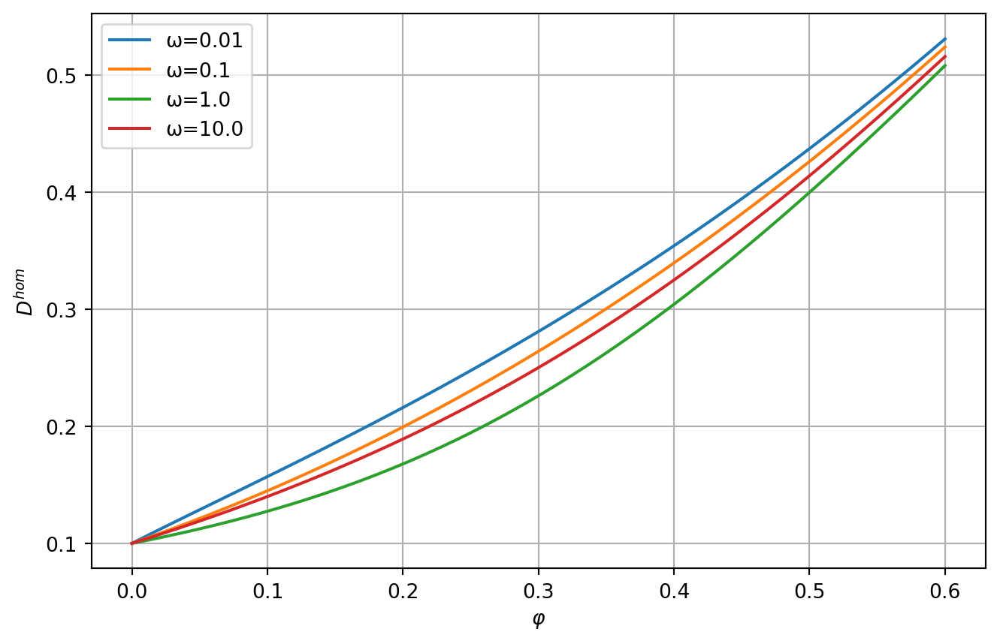
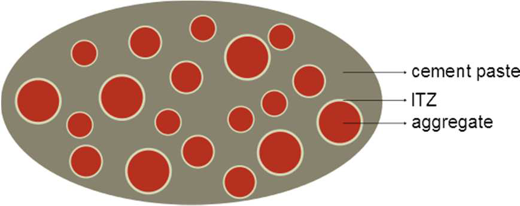
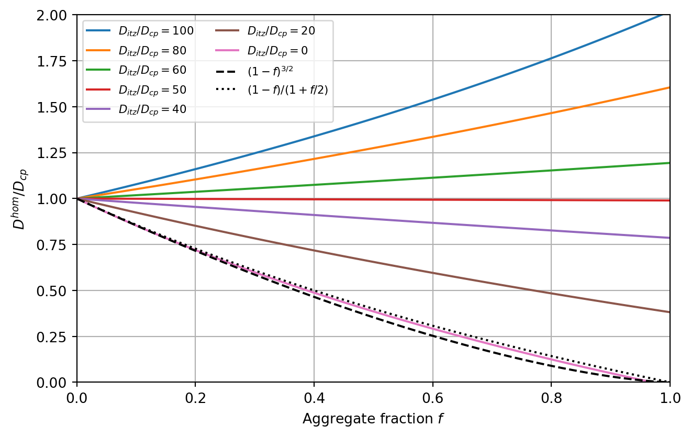
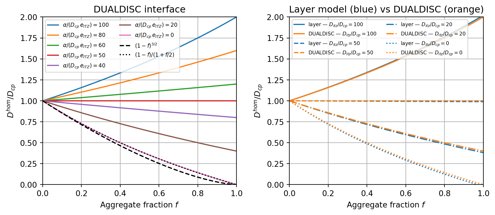

import numpy as np
from echoes import *
import math
import matplotlib.pyplot as plt
np.set_printoptions(precision=8, suppress=True)20 Transport properties
Homogenization of 2nd-order tensor properties
Transport properties (diffusivity "D", permeability/conductivity "K") are represented by 2nd-order symmetric tensors. The homogenize function handles them via the prop argument:
Dhom = homogenize(prop="D", rve=myrve, scheme=sch)The 2nd-order tensor properties are defined using tensor objects with 3x3 matrices or the identity tId2.
Diffusivity of porous media
The effective diffusivity of a porous material with elongated pores can be modeled as a function of porosity and pore aspect ratio.
Figure — effective diffusivity vs porosity (SC, pore shapes)
Ds = 0.1 * tId2 # solid diffusivity
Dp = 1.0 * tId2 # pore diffusivity
myrve = rve(matrix="SOLID")
myrve["SOLID"] = ellipsoid(shape=spheroidal(1.), symmetrize=[ISO],
prop={"D": Ds})
myrve["PORE"] = ellipsoid(shape=spheroidal(0.1), symmetrize=[ISO],
prop={"D": Dp})
lphi = np.linspace(0., 0.6, 51)
fig, ax = plt.subplots(figsize=(8, 5))
for omega in [0.01, 0.1, 1., 10.]:
myrve["PORE"].shape = spheroidal(omega)
lD = []
for phi in lphi:
myrve["PORE"].fraction = phi
myrve["SOLID"].fraction = 1. - phi
try:
D = homogenize(prop="D", rve=myrve, scheme=SC,
verbose=False, maxnb=300, epsrel=1.e-10)
lD.append(max(np.trace(D.array) / 3., 0.))
except:
lD.append(0.)
ax.plot(lphi, lD, label=f"ω={omega}")
ax.set_xlabel(r"$\varphi$")
ax.set_ylabel(r"$D^{hom}$")
ax.grid(True); ax.legend()
plt.show()
Effect of the Interfacial Transition Zone (ITZ)
In mortar, the Interfacial Transition Zone (ITZ) is a thin shell (~50 µm) of higher-porosity cement paste surrounding each aggregate, with a locally higher diffusivity than the bulk paste. Papadakis et al. (1991) noted that the reduction in diffusivity due to impermeable aggregates can be offset — or even reversed — by this more permeable surrounding shell.

The inclusion is modelled with sphere_nlayers (see Chapter 8): an impermeable aggregate (layer 0, radius \(R_{agg}\)) surrounded by an ITZ shell (layer 1, thickness \(e_{ITZ}\)), both embedded in the cement paste matrix of reference diffusivity \(D_{cp} = 1\).
Because the sphere_nlayers inclusion covers aggregate + ITZ shell, its effective volume fraction is larger than the bare aggregate fraction \(f\): \[f_{inc} = f\!\left(1 + \frac{e_{ITZ}}{R_{agg}}\right)^3\]
Ragg = 5.e3 # aggregate radius (µm)
eITZ = 50. # ITZ thickness (µm)
# RVE: cement paste matrix + (aggregate + ITZ) inclusion — MT scheme
ver_itz = rve(prop={"D": tId2}, matrix="CEMENT")
ver_itz["CEMENT"] = ellipsoid(shape=spherical, prop={"D": tId2})
ver_itz["AGG"] = sphere_nlayers(radii=[Ragg, Ragg + eITZ],
prop={"D": [tZ2, tId2]})
# layer 0 = aggregate (D = 0), layer 1 = ITZ (D updated per run)
def Dhom_itz(f, d_itz):
"""Normalised effective diffusivity Dhom/Dcp (MT scheme).
f : bare aggregate volume fraction
d_itz : Ditz/Dcp ratio
"""
f2 = f * (1. + eITZ / Ragg)**3 # effective inclusion fraction
ver_itz["CEMENT"].fraction = 1. - f2
ver_itz["AGG"].fraction = f2
ver_itz["AGG"].set_prop("D", 1, d_itz * tId2) # update ITZ diffusivity
return np.trace(homogenize(prop="D", rve=ver_itz,
scheme=MT, verbose=False).array) / 3.Figure — effect of the Interfacial Transition Zone (layer model)
lf = np.linspace(0.001, 0.999, 50)
d_list = [100., 80., 60., 50., 40., 20., 0.001]
fig, ax = plt.subplots(figsize=(7, 4.5))
for d in d_list:
lbl = fr"$D_{{itz}}/D_{{cp}}={int(d) if d >= 1 else 0}$"
ax.plot(lf, [Dhom_itz(f, d) for f in lf], label=lbl)
# Analytical references: purely impenetrable spheres (no ITZ)
ax.plot(lf, [(1. - f)**1.5 for f in lf], 'k--', label=r'$(1-f)^{3/2}$')
ax.plot(lf, [(1. - f)/(1. + .5*f) for f in lf], 'k:', label=r'$(1-f)/(1+f/2)$')
ax.set_xlabel(r"Aggregate fraction $f$")
ax.set_ylabel(r"$D^{hom}/D_{cp}$")
ax.set_xlim(0., 1.); ax.set_ylim(0., 2.)
ax.legend(fontsize=8, ncol=2); ax.grid(True)
plt.tight_layout()
plt.show()
The role of the aggregate+ITZ composite inclusion depends strongly on \(D_{itz}/D_{cp}\):
- \(D_{itz}/D_{cp} \ll 1\): the ITZ is also impermeable; \(D^{hom}\) falls well below both bounds for simple impenetrable spheres.
- \(D_{itz}/D_{cp} \approx 50\): the two effects nearly cancel and \(D^{hom} \approx D_{cp}\) for moderate fractions — consistent with the observation of Papadakis et al. (1991).
- \(D_{itz}/D_{cp} \gg 1\): the highly permeable ITZ network drives the effective diffusivity above the neat paste value.
DUALDISC interface model
A thin spherical shell of radius \(R\), thickness \(e \ll R\) and diffusivity \(D_s\) can be replaced in the limit \(e \to 0\) by a zero-thickness interface whose sole parameter is the transmissivity: \[\alpha = D_s \cdot e \qquad [\text{length}^2/\text{time} \times \text{length} = \text{length}^3/\text{time}]\]
The DUALDISC interface type implements this dual-discontinuity condition: the normal flux is continuous across the interface, and the concentration jump is proportional to \(1/\alpha\). This avoids the explicit thin-layer and the associated volume-fraction correction \(f\,(1+e_{ITZ}/R_{agg})^3\).
In this model the inclusion is simply the bare aggregate (1 layer, radii=[Ragg]); the ITZ is fully encoded in interf_prop:
# DUALDISC interface: transmissivity alpha = D_ITZ * e_ITZ (Dcp = 1)
ver_dd = rve(prop={"D": tId2}, matrix="CEMENT")
ver_dd["CEMENT"] = ellipsoid(shape=spherical, prop={"D": tId2})
ver_dd["AGG"] = sphere_nlayers(radii=[Ragg], prop={"D": [tZ2]},
interf_prop={"D": [[0., DUALDISC]]})
# single interface at r=Ragg; alpha updated per run
def Dhom_dd(f, alpha):
"""Normalised effective diffusivity via DUALDISC interface (MT scheme).
f : aggregate volume fraction
alpha : transmissivity = D_ITZ * e_ITZ (Dcp = 1)
"""
ver_dd["CEMENT"].fraction = 1. - f
ver_dd["AGG"].fraction = f
ver_dd["AGG"].set_interf_prop("D", 0, [alpha, DUALDISC])
return np.trace(homogenize(prop="D", rve=ver_dd, scheme=MT, verbose=False).array) / 3.The following plots compare the two approaches for the same values of \(D_{itz}/D_{cp} = \alpha/(D_{cp}\,e_{ITZ})\) — the dimensionless normalised transmissivity:
Figure — layer model vs DUALDISC interface comparison
fig, axes = plt.subplots(1, 2, figsize=(9, 4))
# Left: DUALDISC curves
for d in d_list:
alpha = d * eITZ
lbl = fr"$\alpha/(D_{{cp}}\,e_{{ITZ}})={int(d) if d >= 1 else 0}$"
axes[0].plot(lf, [Dhom_dd(f, alpha) for f in lf], label=lbl)
axes[0].plot(lf, [(1.-f)**1.5 for f in lf], 'k--', label=r'$(1-f)^{3/2}$')
axes[0].plot(lf, [(1.-f)/(1.+.5*f) for f in lf], 'k:', label=r'$(1-f)/(1+f/2)$')
axes[0].set_title("DUALDISC interface")
axes[0].set_xlabel(r"Aggregate fraction $f$")
axes[0].set_ylabel(r"$D^{hom}/D_{cp}$")
axes[0].set_xlim(0., 1.); axes[0].set_ylim(0., 2.)
axes[0].legend(fontsize=7, ncol=2); axes[0].grid(True)
# Right: layer model vs DUALDISC for selected values
for d, ls, lw in zip([100., 50., 20., 0.001],
['-', '--', '-.', ':'],
[1.5, 1.5, 1.5, 1.5]):
lbl = fr"$D_{{itz}}/D_{{cp}}={int(d) if d >= 1 else 0}$"
alpha = d * eITZ
axes[1].plot(lf, [Dhom_itz(f, d) for f in lf], color='C0', ls=ls, lw=lw, label=f'layer — {lbl}')
axes[1].plot(lf, [Dhom_dd(f, alpha) for f in lf], color='C1', ls=ls, lw=lw, label=f'DUALDISC — {lbl}')
axes[1].set_title(r"Layer model (blue) vs DUALDISC (orange)")
axes[1].set_xlabel(r"Aggregate fraction $f$")
axes[1].set_ylabel(r"$D^{hom}/D_{cp}$")
axes[1].set_xlim(0., 1.); axes[1].set_ylim(0., 2.)
axes[1].legend(fontsize=6.5, ncol=2); axes[1].grid(True)
plt.tight_layout()
plt.show()
The two models agree closely for moderate aggregate fractions: the small discrepancy at large \(f\) reflects the neglected volume \(f\,[(1+e_{ITZ}/R_{agg})^3-1] \approx 3f\,e_{ITZ}/R_{agg}\) of the ITZ shell (here \(\approx 3\%\)).
Permeability of cracked media
The permeability of cracked media is particularly important in geomechanics. Cracks with high aperture-to-radius ratio create preferential flow paths. This coupling between elasticity and transport can be modeled by assigning both "C" and "K" properties to the RVE phases (see Chapter 14).
\(\,\)